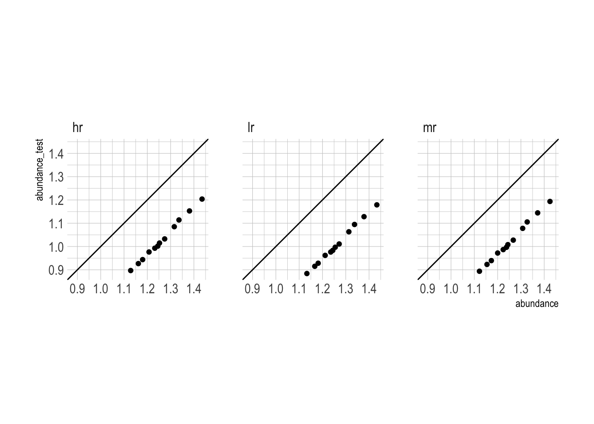

library(here)
library(hrbrthemes)
library(patchwork)
source("https://raw.githubusercontent.com/conorotompkins/ebird_shiny_app/main/scripts/functions/get_species_metric.R")
theme_set(theme_ipsum())
species_table <- crossing(location = "Pennsylvania",
species = c("Northern Cardinal"),
metric = c("occurrence", "count", "abundance"),
resolution = c("hr", "mr", "lr"))While exploring some of the citizen science bird observation data available through ebirdst, I was confused by how to understand the calculation of ebirdst’s abundance metric.
The ebirdst documentation (?ebirdst::load_raster) defines abundance as:
the expected relative abundance, computed as the product of the probability of occurrence and the count conditional on occurrence, of the species on an eBird Traveling Count by a skilled eBirder starting at the optimal time of day with the optimal search duration and distance that maximizes detection of that species in a region.
I had seen some weird results when trying to manually calculate abundance as occurrence * count. My initial attempt had aggregated the results by month.
The underlying problem is that abundance and count are the results of models, and are subject to model error. I also believe that the data outputted from load_raster lacks the necessary significant digits to accurately recreate abundance. Lowering the resolution or aggregating the data will exacerbate this issue.
This code loads my convenience function to retrieve a metric for a species at a given geographic resolution. This gets occurrence, count, and abundance for the Northern Cardinal at high (3 km), medium (9 km), and low resolutions (27 km). The function also crops the underlying raster data to Pennsylvania.
species_table# A tibble: 9 × 4
location species metric resolution
<chr> <chr> <chr> <chr>
1 Pennsylvania Northern Cardinal abundance hr
2 Pennsylvania Northern Cardinal abundance lr
3 Pennsylvania Northern Cardinal abundance mr
4 Pennsylvania Northern Cardinal count hr
5 Pennsylvania Northern Cardinal count lr
6 Pennsylvania Northern Cardinal count mr
7 Pennsylvania Northern Cardinal occurrence hr
8 Pennsylvania Northern Cardinal occurrence lr
9 Pennsylvania Northern Cardinal occurrence mr species_metrics <- species_table %>%
mutate(data = pmap(list(location, species, metric, resolution), ~get_species_metric(..1, ..2, ..2, ..3, ..4))) %>%
mutate(resolution = fct_relevel(resolution, c("hr", "mr", "lr"))) %>%
arrange(species, metric, resolution) |>
unnest(data) %>%
unnest(data) species_metrics# A tibble: 1,243,320 × 13
location species metric resolution family_common_name common_name metric_desc
<chr> <chr> <chr> <chr> <chr> <chr> <chr>
1 Pennsyl… Northe… abund… hr Northern Cardinal Northern C… abundance
2 Pennsyl… Northe… abund… hr Northern Cardinal Northern C… abundance
3 Pennsyl… Northe… abund… hr Northern Cardinal Northern C… abundance
4 Pennsyl… Northe… abund… hr Northern Cardinal Northern C… abundance
5 Pennsyl… Northe… abund… hr Northern Cardinal Northern C… abundance
6 Pennsyl… Northe… abund… hr Northern Cardinal Northern C… abundance
7 Pennsyl… Northe… abund… hr Northern Cardinal Northern C… abundance
8 Pennsyl… Northe… abund… hr Northern Cardinal Northern C… abundance
9 Pennsyl… Northe… abund… hr Northern Cardinal Northern C… abundance
10 Pennsyl… Northe… abund… hr Northern Cardinal Northern C… abundance
# ℹ 1,243,310 more rows
# ℹ 6 more variables: date <date>, value <dbl>, month <chr>, region <chr>,
# x <dbl>, y <dbl>This unnests the data and recalculates abundance (abundance_test) and the difference between actual abundance and abundance_test.
species_table_unnested <- species_metrics %>%
select(species, resolution, date, month, x, y, metric_desc, value) %>%
pivot_wider(id_cols = c(species, resolution, date, month, x, y),
names_from = metric_desc,
values_from = value) %>%
select(species, resolution, date, month, x, y, count, occurrence, abundance) %>%
mutate(abundance_test = count * occurrence,
diff = abundance - abundance_test)Grouping by month to get to the county level changes the grain of the data so much that abundance_test undershoots abundance by 20%. This occurs at all resolutions.
species_metrics %>%
select(species, resolution, date, month, x, y, metric_desc, value) %>%
pivot_wider(id_cols = c(species, resolution, date, month, x, y),
names_from = metric_desc,
values_from = value) %>%
select(species, resolution, date, month, x, y, count, occurrence, abundance) %>%
group_by(species, month, resolution) %>%
summarize(occurrence = mean(occurrence, na.rm = T),
count = mean(count, na.rm = T),
abundance = mean(abundance, na.rm = T)) %>%
ungroup() %>%
mutate(abundance_test = count * occurrence,
diff = abundance - abundance_test) %>%
ggplot(aes(abundance, abundance_test)) +
geom_abline() +
geom_point() +
facet_wrap(~resolution) +
tune::coord_obs_pred()`summarise()` has grouped output by 'species', 'month'. You can override using
the `.groups` argument.
Totally un-aggregated, abundance_test closely resembles abundance, but degrades as resolution decreases.
species_table_unnested %>%
select(abundance, abundance_test, resolution) %>%
drop_na() %>%
ggplot(aes(abundance, abundance_test)) +
geom_density_2d_filled(contour_var = "ndensity") +
geom_abline(color = "white") +
facet_wrap(~resolution) +
tune::coord_obs_pred() +
coord_cartesian(xlim = c(0, 4),
ylim = c(0, 4)) +
guides(fill = guide_colorsteps())Coordinate system already present. Adding new coordinate system, which will
replace the existing one.At lower resolutions, the difference is positively skewed, which means that abundance is higher than abundance_test.
species_table_unnested %>%
drop_na(diff) %>%
ggplot(aes(diff)) +
geom_histogram() +
facet_wrap(~resolution, scale = "free_y", ncol = 1)`stat_bin()` using `bins = 30`. Pick better value with `binwidth`.At the highest resolution, diff is heteroskedastic. At lower resolutions, there are patterns to the error.
species_table_unnested %>%
drop_na(occurrence, diff) %>%
ggplot(aes(occurrence, diff)) +
geom_density_2d_filled(contour_var = "ndensity") +
facet_wrap(~resolution) +
scale_x_percent() +
guides(fill = guide_colorsteps())This was a useful exercise for me to understand how the geographic resolution and other aggregation of the data can affect estimated metrics, specifically in the citizen science context.
Update
I made an issue on the ebirdst Github page and talked to one of the maintainers about their definitions of count and abundance. I now have a much stronger understanding of these variables.
The following code reproduces the graph I attached to the issue:
library(hrbrthemes)
theme_set(theme_ipsum())
norcar_table <- crossing(location = "Pennsylvania",
species = c("Northern Cardinal"),
metric = c("occurrence", "count", "abundance"),
resolution = c("hr"))norcar_metrics <- norcar_table %>%
mutate(data = pmap(list(location, species, metric, resolution), ~get_species_metric(..1, ..2, ..2, ..3, ..4))) %>%
mutate(resolution = fct_relevel(resolution, c("hr", "mr", "lr"))) %>%
arrange(species, metric, resolution) %>%
unnest(data) |>
unnest(data)norcar_metrics_wide <- norcar_metrics %>%
select(species, date, x, y, metric_desc, value) %>%
pivot_wider(names_from = metric_desc,
values_from = value)
plot_1 <- norcar_metrics_wide %>%
drop_na(occurrence, count) %>%
ggplot(aes(occurrence, count)) +
geom_density_2d_filled(contour_var = "ndensity") +
scale_x_percent() +
guides(fill = "none") +
theme_bw()
plot_2 <- norcar_metrics_wide %>%
drop_na() %>%
ggplot(aes(occurrence, abundance)) +
geom_density_2d_filled(contour_var = "ndensity") +
scale_x_percent() +
guides(fill = "none") +
theme_bw()
plot_3 <- norcar_metrics_wide %>%
drop_na() %>%
ggplot(aes(count, abundance)) +
geom_density_2d_filled(contour_var = "ndensity") +
geom_abline() +
guides(fill = "none") +
theme_bw()
layout <- "
AACC
BBCC
"
plot_1 + plot_2 + plot_3 +
plot_layout(guides = 'collect', design = layout) +
plot_annotation(title = "Northern Cardinal in Pennsylvania")Citations
Fink, D., T. Auer, A. Johnston, M. Strimas-Mackey, O. Robinson, S. Ligocki, W. Hochachka, C. Wood, I. Davies, M. Iliff, L. Seitz. 2020. eBird Status and Trends, Data Version: 2019; Released: 2020 Cornell Lab of Ornithology, Ithaca, New York. https://doi.org/10.2173/ebirdst.2019